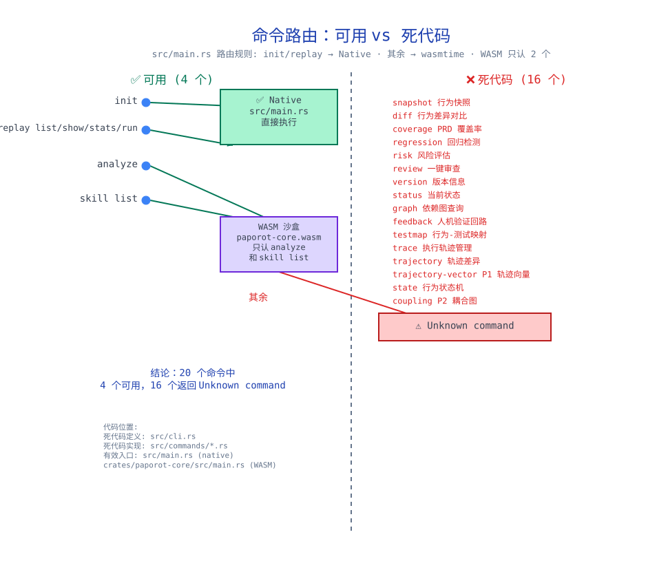
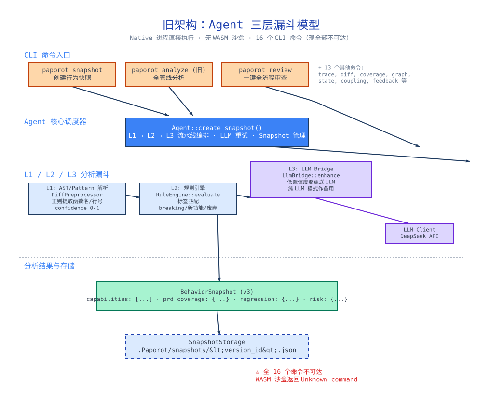
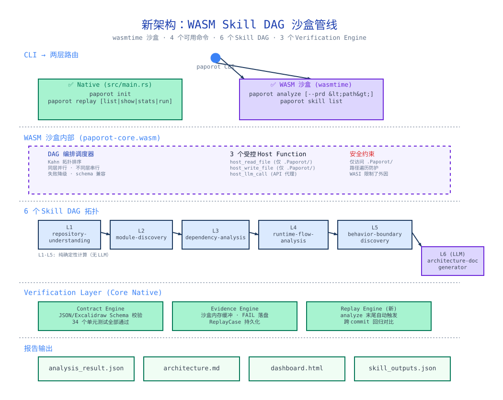

审计日期：2026-06-23 · 范围：全项目代码 + 设计文档 + WASM 沙盒运行时
Paporot 是一个 AI 生成代码的行为审计与沙盒化分析管道。它回答两个问题：
init / replay → Native 直接执行；其余 → wasmtime 沙盒。沙盒只认 analyze 和 skill list，其他 16 个返回 Unknown command。

| 模块 | 说明 | 状态 |
|---|---|---|
| WASM 沙盒 | wasmtime 引擎 + 3 个 host function | ✓ |
| Skill DAG 编排 | Kahn 拓扑排序 + 同层并行 + 失败降级 | ✓ |
| 6 个分析 Skill | L1 repository-understanding → L6 architecture-doc-generator | ✓ |
| P0/P1/P2 轨迹分析 | 行为状态机 + 10维轨迹向量 + 耦合图（库代码，未接入管线） | ✓ |
| Agent 日志适配器 | DeepSeek / OpenAI / Claude 适配器 | ✓ |
| Contract Engine | JSON/Excalidraw Schema 校验，34 个测试全过 | ✓ |
| Evidence Engine | 沙盒内存缓冲 + FAIL 落盘 | ✓ |
| Replay Engine | analyze 末尾自动回归 + standaline 命令，5 个测试全过 | ✓ |
| 报告输出 | analysis_result.json + architecture.md + dashboard.html | ✓ |
| 功能 | 状态 |
|---|---|
| PRD Coverage Skill | 只有 skill.toml，无 skill.wasm |
| HTML Artifact 校验 | Contract YAML 存在但 contract.rs 无 checker |
| JSON Schema 校验 | conforms_to_schema 总是返回 pass，假实现 |
#[skill(...)]

| # | 债项 | 影响 |
|---|---|---|
| 1 | 16 个死代码命令在 src/commands/ 下编译但不可达 | 维护负担、用户困惑、编译时间浪费 |
| 2 | 旧 Agent API（src/agent.rs）基于旧架构，WASM 不调用 | 代码膨胀 |
| 3 | src/storage.rs SQLite 路径与 host_write_file 双重存储 | 实际只用一个 |
| 4 | 设计文档引用断裂（docs/ 目录不存在） | 文档不可追溯 |
| # | 债项 |
|---|---|
| 5 | src/skills/ 与 crates/paporot-core/ 双重 Skill 执行逻辑 |
| 6 | crates/skills/ 的 verification_runner 与 pipeline.rs 重复 |
| 7 | 23 个编译 warning（unused imports, dead code） |
.toml 无 .wasmsrc/commands/ 下 16 个不可达命令文件、src/agent.rs、src/storage.rs，精简 src/cli.rs 到只保留 4 个可用命令。低风险、高价值。paporot skill run <name>crates/paporot-core/src/main.rs 的 skill 子命令。pipeline.rs 与 verification_runner.rs 的重复代码。cargo fix 解决 23 个 warning，补全 docs/ 目录的 PRD 引用。8 个命令，每个都可运行。analyze 末尾自动跑 Replay 并输出回归摘要。
docs/old-architecture.excalidraw、docs/new-architecture.excalidraw、docs/dead-code-map.excalidraw。